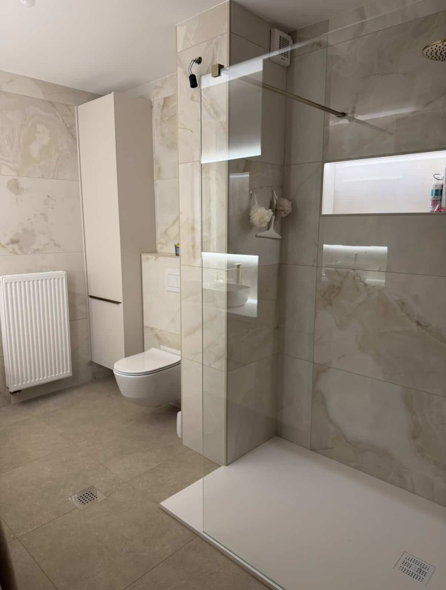
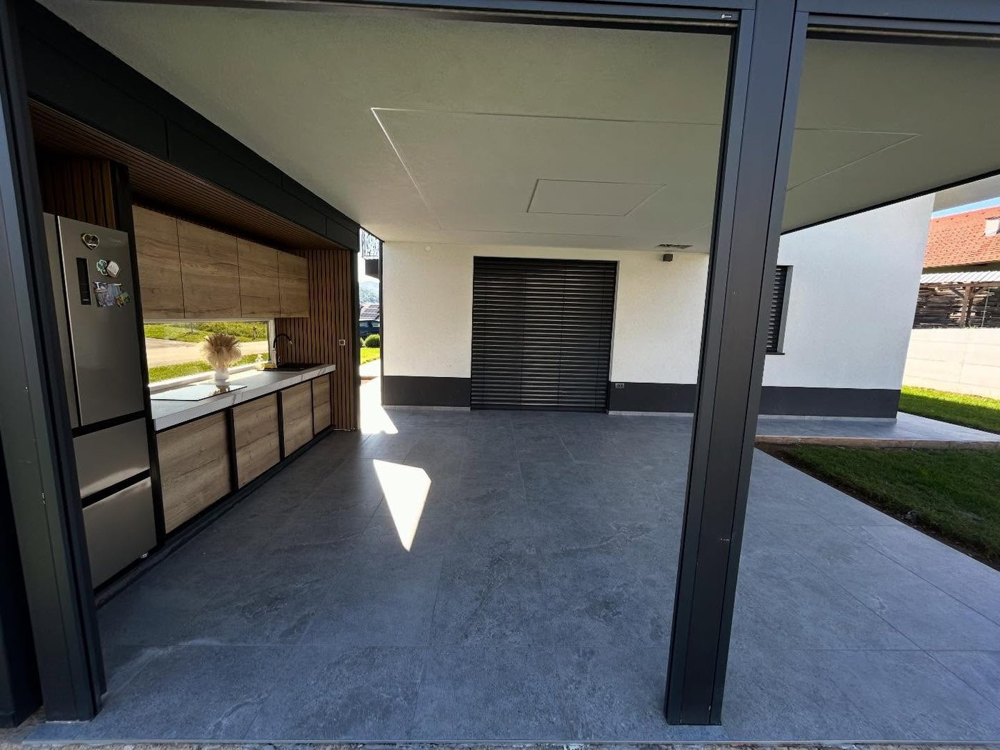
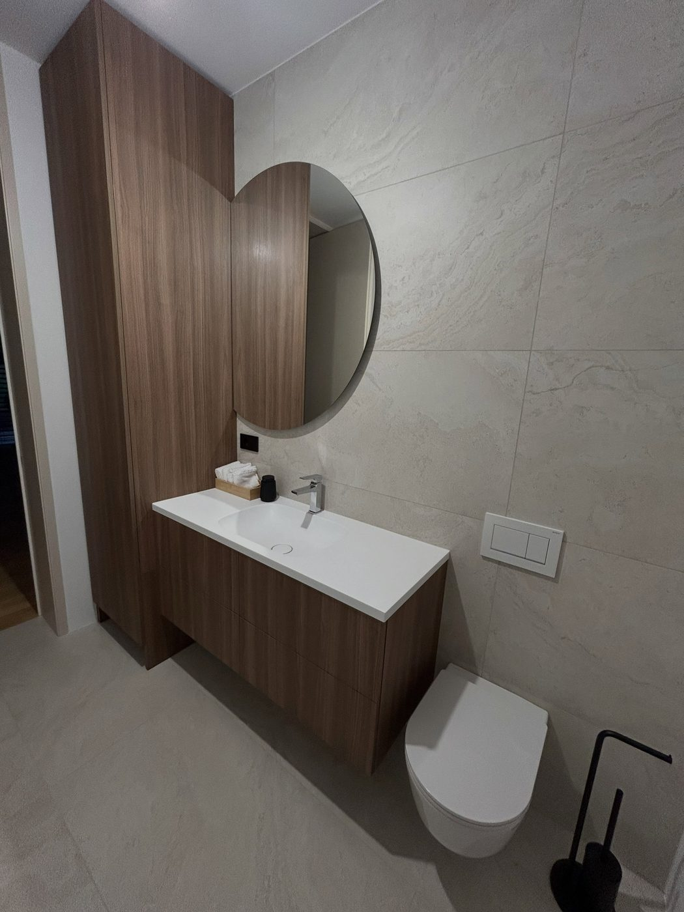
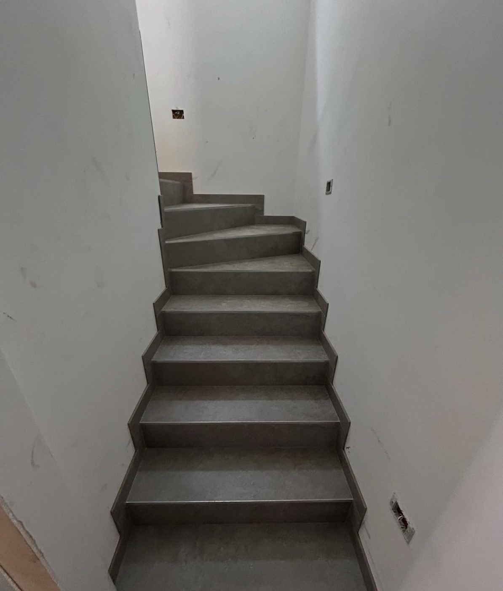
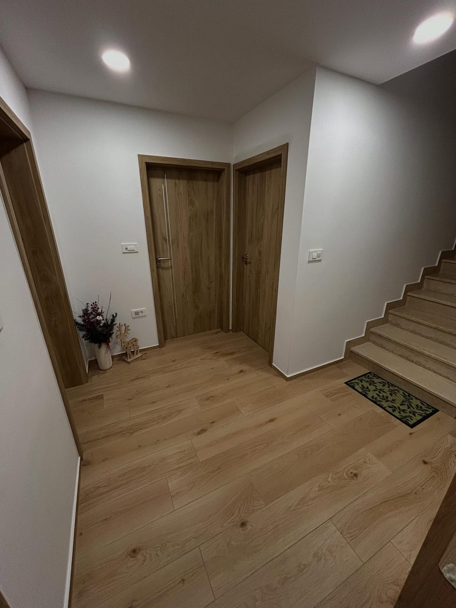
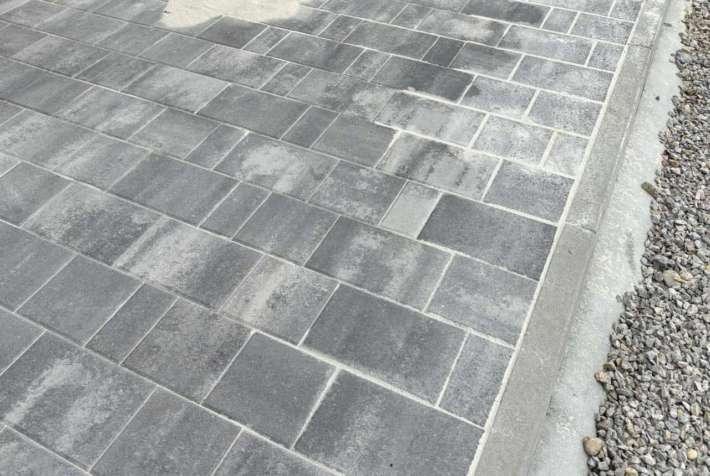

Zaključna dela v gradbeništvu
Od surove gradnje do vselitve. Poskrbimo za končne izvedbe, ki so natančne, čiste in narejene, da trajajo.
Ljubljana z okolico
Zaključna dela v gradbeništvu, izkopi in nizke gradnje, keramičarstvo ter adaptacije – ker je vaše zadovoljstvo naš uspeh.
Kaj delamo
Od surove gradnje do vselitve. Poskrbimo za končne izvedbe, ki so natančne, čiste in narejene, da trajajo.
Strojni izkopi, priprava terena, temelji, dovozi in komunalni priključki – trdna podlaga za vsak projekt.
Polaganje keramike v kopalnicah, kuhinjah, na terasah in tleh. Ravne linije, natančni stiki, urejeni detajli.
Prenove stanovanj, hiš in poslovnih prostorov – od načrta do končne izvedbe, z enim izvajalcem.
Naša dela






O nas
KOC gradnje je gradbeno podjetje iz Ljubljane, ki izvaja dela v Ljubljani in okolici. Prevzamemo projekte različnih velikosti – od manjših popravil do celovitih prenov.
Delamo zanesljivo, pošteno in s poudarkom na detajlih. Vsak projekt obravnavamo, kot bi gradili zase.
Kako poteka
Pokličite ali nam pišite in na kratko opišite, kaj potrebujete.
Pridemo na ogled, preverimo stanje in se pogovorimo o rešitvah.
Pripravimo jasno ponudbo z obsegom del in časovnico.
Dela izvedemo kakovostno, natančno in prostor predamo urejen.
Kontakt
Za ogled in ponudbo nas pokličite ali pošljite povpraševanje po e-pošti.